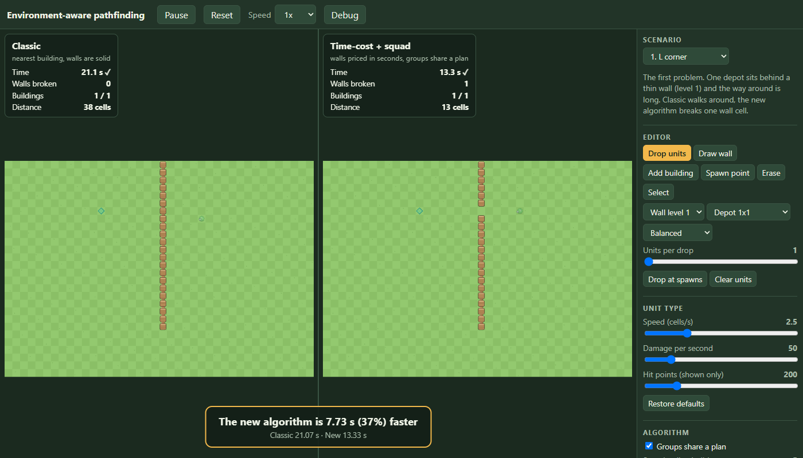
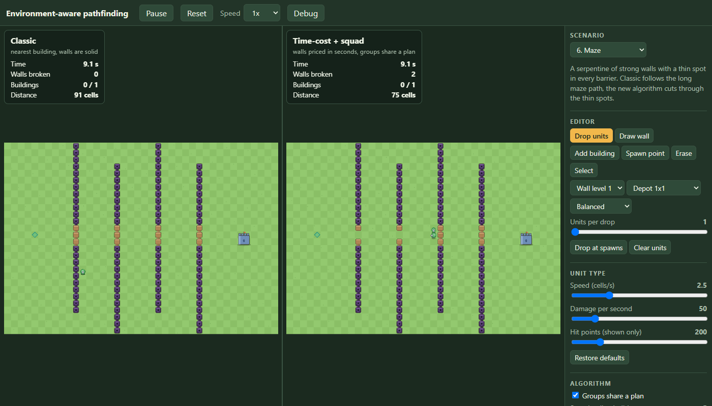
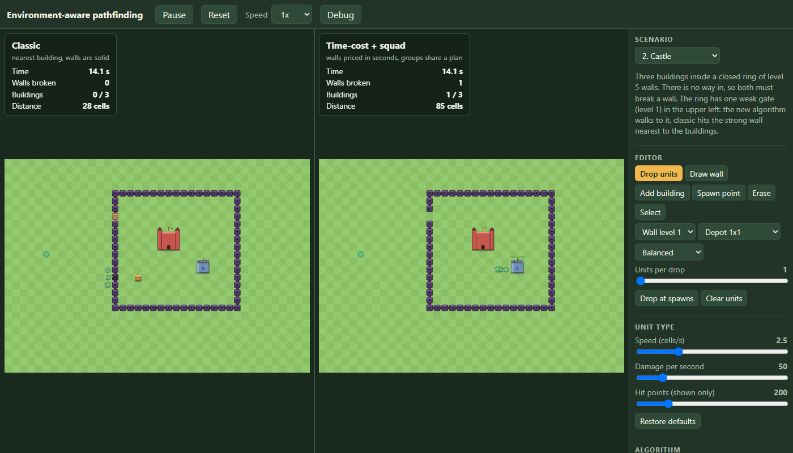
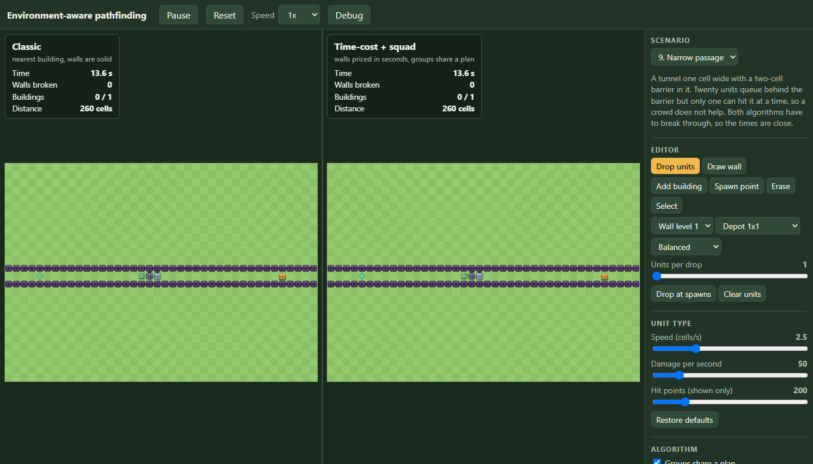
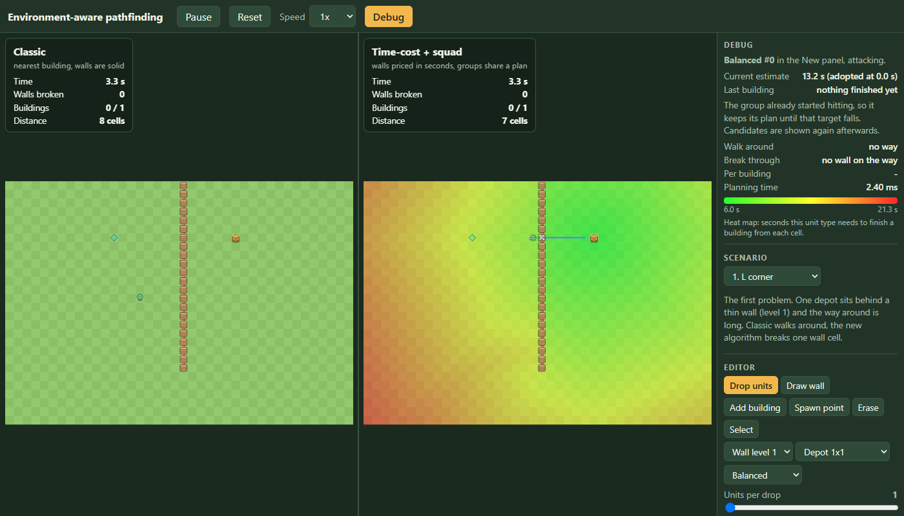
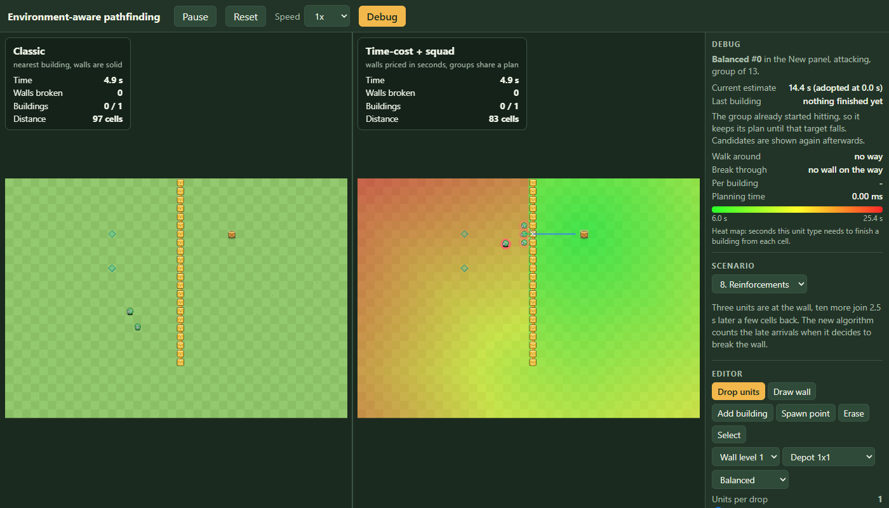
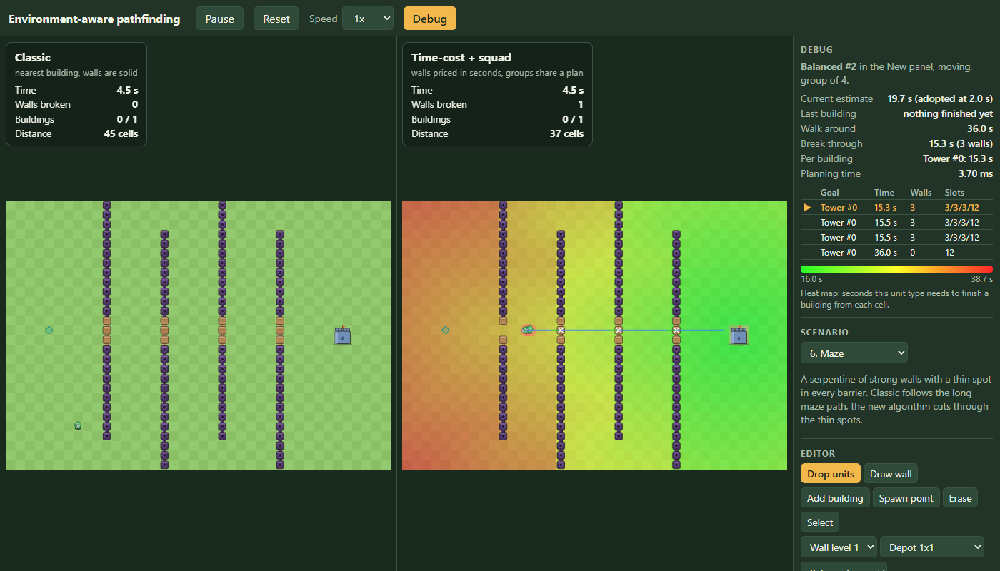
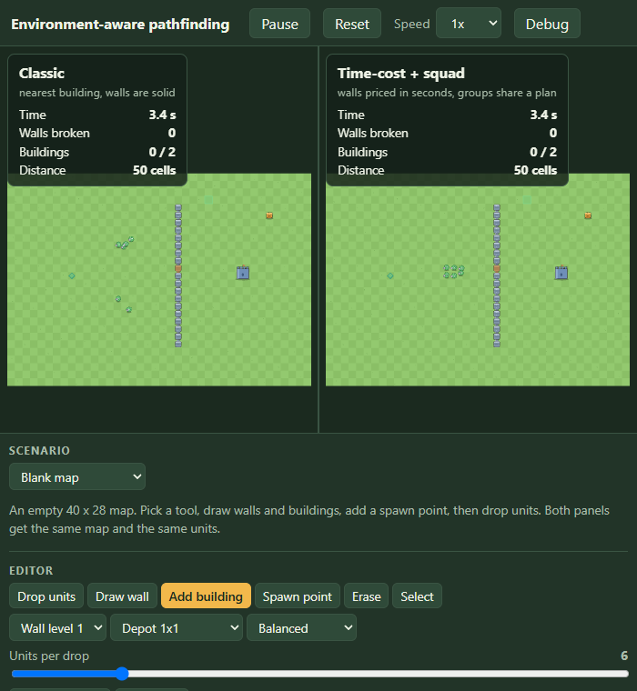

pathfinding part 2: a demo you can break, with an editor, nine maps and a debug view
part 1 was the algorithm: a simulation, a planner that prices walls in seconds, and squads that share attack positions, checked against the real simulation on 200 random maps. this part is what I built on top so that anyone can watch it work and try to break it: a two-panel demo with a fixed time step, an editor, nine ready maps, a debug view that shows why a unit decided what it decided, and a build that goes to GitHub Pages. like part 1 it is a work log: the numbers are from runs I did, and the things that went wrong stay in.
try it: live demo · source · part 1: the unit that walked around a wall · part 3: the follow-up list
stage 4: making it visible
everything so far was numbers in a terminal. stage 4 draws the simulation with PixiJS: one canvas, two panels, the classic algorithm on the left and the new one on the right, on the same map with the same units and the same deploy events. the drawing code only reads the worlds. it never writes to them, and src/sim still imports nothing from Pixi.
the demo: the scenario is the one source, the session runs two worlds in lockstep, the views only read.
the loop is the part that has to be right. the simulation runs on a fixed step of 1/30 s. the browser gives me a frame time that changes, so an accumulator turns real time into a whole number of steps, a speed control (0.5x to 4x) scales it, and one long frame (a background tab) is cut to 0.25 s so it cannot turn into a burst of steps. between two steps the view blends each unit's previous and current position, so movement is smooth at any frame rate, and the turning of a unit towards its target is smoothed in the drawing only.
the loop is the whole of the idea, so here it is. real time goes into an accumulator, the accumulator is spent in whole steps, and whatever is left over becomes the alpha that the view uses to draw between two steps:
advance(realSeconds: number): void {
if (!this.playing) return
this.accumulator += Math.min(realSeconds, MAX_FRAME_SECONDS) * this.speed
while (this.accumulator >= DT && !this.finished) {
for (const listener of this.beforeStep) listener()
this.classic.step()
this.fresh.step()
this.stepCount++
this.accumulator -= DT
}
if (this.finished) this.accumulator = 0
}and the view side of it, where each troop is drawn between its previous and its current position and turns towards where it goes, without the simulation ever seeing that angle:
private drawTroops(world: World, alpha: number, seconds: number): void {
const g = this.troops
g.clear()
for (const troop of world.troops) {
if (troop.state === 'notSpawned') continue
const before = this.previous[troop.id] ?? { x: troop.x, y: troop.y }
drawTroop(g, troop.type.id, {
x: before.x + (troop.x - before.x) * alpha,
y: before.y + (troop.y - before.y) * alpha,
angle: this.facing(world, troop, troop.x - before.x, troop.y - before.y),
phase: seconds * 12 + troop.id,
moving: troop.state === 'moving',
lunge: troop.state === 'attacking' ? Math.max(0, Math.sin(seconds * 14 + troop.id)) : 0,
fade: troop.state === 'done' ? 0.45 : 1,
})
}
}the acceptance test for this is not a picture. the same scenario runs once with frames of exactly 1/60 s and once with a mix of 0.2, 0.013, 0.1 and 0.05 s, and every event and statistic of both worlds has to be the same text. it also has to be the same after Reset. both pass. I checked the picture too, in headless Chrome: on the L-corner map the left panel walks around, the right one breaks the wall and finishes first, and a banner says "the new algorithm is 7.73 s (37%) faster". that is a different map from the 15 by 20 test map (a 40 by 28 grid, wall 22 cells long), so the numbers differ: 21.07 s and 13.33 s.

stage 5: an editor and nine maps
a demo where you can only watch one map is a video. stage 5 adds an editor. the map is one Scenario object, both worlds are built from it, and every editing action is a small pure function on that object (paint a wall of level 1 to 5, erase, place a 1x1, 2x2 or 3x3 building only where the whole footprint is free, add a spawn point, change the hit points of one selected wall or building), with unit tests. any edit resets both worlds. there are also sliders for the speed, damage and hit points of a unit type, the squad radius, the number of candidate plans, the wall hit point multiplier, and a switch that turns group behavior off so the new algorithm plans per unit.
the actions are as small as they sound. this is the one that paints a wall, with all its refusals (outside the map, on a spawn or a deploy cell, on a building):
export function paintWall(s: Scenario, x: number, y: number, level: WallLevel): boolean {
if (!inside(s, x, y) || marked(s, x, y)) return false
if (occupiedCells(s).get(`${x},${y}`)?.startsWith('building')) return false
const wall = s.walls.find((w) => w.x === x && w.y === y)
if (wall === undefined) {
s.walls.push({ x, y, level })
return true
}
if (wall.level === level && wall.hp === undefined) return false
wall.level = level
delete wall.hp
return true
}dropping units is the interesting part. a click on either panel puts the same units on the same cell at the same simulated time in both worlds, and the event is written into the scenario's deploy list so that Reset plays it again. the replay test caught a bug here that I would not have seen by eye: I stamped the event with the time of the steps already run, but a world only lands a unit in the next step, so the live run and the replay differed by one step (0.2667 s against 0.2333 s for the same click). the fix is to stamp the time of the next step.
// Drops one troop on each cell on the next step, in both worlds, and records it so a reset replays it.
deployAt(cells: { x: number; y: number }[], troopType: string): void {
for (const { x, y } of cells) {
const event = { t: (this.stepCount + 1) * DT, troopType, x, y } // lands on the very next step, exactly as a replay will land it
this.scenario.deployments.push(event)
this.classic.addDeployment(event)
this.fresh.addDeployment(event)
}
}nine ready-made maps, each with a short description in the demo. these are the times to destroy every building, classic against the new algorithm, straight from the smoke test that runs every map under both. they use the rule of part 1, one attacker per attack position. the section after this one adds a switch that lets units stand inside each other (now the default) and gives the numbers for it:
| map | classic | new | what it shows |
|---|---|---|---|
| 1. L corner | 21.07 s | 13.33 s | a thin wall against a long walk |
| 2. Castle | 43.30 s | 34.50 s | a level 5 ring with one weak gate |
| 3. Double layer | 63.60 s | 30.47 s | strong inner ring with a weak far door, plus an open depot |
| 4. Mixed levels | 46.90 s | 29.17 s | a weak stretch off the straight line |
| 5. No way in | 20.37 s | 19.73 s | closed by level 3 walls, both must break in |
| 6. Maze | 47.33 s | 20.13 s | a serpentine with thin spots in every barrier |
| 7. Crowd effect | 21.07 s | 21.07 s | one unit; from 3 units the new algorithm breaks the wall |
| 8. Reinforcements | 17.00 s | 14.63 s | 3 units at the wall, 10 more 2.5 s later |
| 9. Narrow passage | 38.10 s | 38.10 s | 20 units queue in a one-cell tunnel behind a two-cell barrier |

I have to be straight about how the castle and the double layer got their numbers, because they were not first tries. my first castle was a level 2 ring around three buildings, and the new algorithm finished 4.7% behind classic (21.60 s against 20.63 s). both broke almost the same wall at almost the same time. the whole gap was the order of the buildings inside: the same greedy limit as before, a second and a half of extra walking. the first double layer was 1.7% behind for the same reason. so I changed both maps so that the algorithms have a real choice to make: a strong ring with one weak gate, a strong inner ring with one weak door on the far side. that is a fair thing to show, since it is exactly what the algorithm is for, but it is also me building a map where it wins, and the reader should know. the maps where it does not win are in the table too: 5 is a near tie, 7 is a tie by design (one unit), and 9 is a tie because both have to break the same two barrier cells, one attacker at a time. that map is worth its own section, because it found a real bug.
the crowd map also showed a difference from the test map: here the switch from walking around to breaking happens at 3 units, not 2, because the map is bigger and the walk around is shorter relative to the wall. a test checks that 1 and 2 units walk around and 3, 4 and 6 break the wall.

the map that found a bug
my first narrow passage was not a passage. I built a tunnel of level 5 walls between x = 8 and x = 32 with a barrier in the middle, and the smoke test said 14.10 s for classic and 14.17 s for the new algorithm, so I wrote it down as a tie. only when I looked at a screenshot did I see why: the tunnel was open at both ends, and both algorithms simply walked around the outside. so I made the tunnel run across the whole map, closed by walls.

now the new algorithm was 23% slower: 46.93 s against 38.10 s for classic. the estimate was not the problem, since the planner had predicted 46.8 s and the run took 46.93 s. the problem was that it had chosen badly and never even looked at the good option. the debug view (below) showed a candidate list with only two entries, both going through the side walls of the tunnel, never through the barrier.
the reason was in the first price. the field prices a wall by the damage a squad can bring to it, and I had counted the free cells among all eight neighbors of the wall cell as attack positions. a level 5 side wall of the tunnel has three free cells inside and three outside, so the price assumed six attackers (300 damage per second, 6.7 s for 2,000 hit points) when only the three on the near side can hit it (13.3 s). the barrier cells have one free cell next to them and were priced at their true 10 s each, so the wrong walls looked cheaper and the barrier route was never generated. the fix counts only the free cells on the best single side of the wall:
// Free cells on the best side of the cell (west, east, north or south line of three): how many attackers a squad
// can bring at once when it comes from one side. Counting all eight neighbors would credit a wall in a row with
// the cells on its far side too and make it look twice as cheap to break.
private sideSlots(cell: number): number {
const { grid } = this
const x = cell % grid.width
const y = (cell - x) / grid.width
const free = (cx: number, cy: number) => (grid.inBounds(cx, cy) && grid.isWalkable(grid.cellAt(cx, cy)) ? 1 : 0)
let west = 0
let east = 0
let north = 0
let south = 0
for (let d = -1; d <= 1; d++) {
west += free(x - 1, y + d)
east += free(x + 1, y + d)
north += free(x + d, y - 1)
south += free(x + d, y + 1)
}
return Math.max(west, east, north, south)
}after it both algorithms finish in 38.10 s. every other map kept its exact time, and the 105 tests still passed with one exception that I decided not to hide: the oracle went from 200 of 200 picks within 5% to 199 of 200 (the worst pick is 1.052 instead of 1.021), and on the two fresh sets of maps it stayed at 199 and 199. I relaxed the oracle's bound from "worst pick within 5%" to "at least 198 of 200 within 5% and none more than 10% behind", which is what the measured numbers support. I would rather have a correct rule and an honest bound than a tighter number that only held because the bug was there.
a switch: attackers inside each other
after part 1 I was told something that should have been obvious: in most games of this kind units do not queue for a spot. they stand inside each other and all of them hit the wall. the rule that only one attacker fits on a cell was in my plan from stage 1, and it shaped everything since: the attack positions, the slot search, the waiting, the queues behind a barrier. it is a choice, not a law, so it is now a switch. attackers can share a cell is on by default. with it off you get the rule of part 1.
in the simulation it is one flag on the world (it comes from the scenario, so the editor and the reset button carry it). when it is on, a troop that has reached its target just starts hitting, from wherever it stands. nothing is reserved, nobody walks to another position, nobody waits:
// One attacker per cell: a troop on a taken cell walks to a free attack position of the same target, or waits when none is left.
private tryStartAttack(troop: Troop, mayRelocate = false): void {
if (this.stackAttackers) {
troop.state = 'attacking' // no position is reserved, everyone hits from where they stand
return
}
const cell = this.grid.cellOfPoint(troop.x, troop.y)
const holder = this.slotHolder[cell]
if (holder === -1 || holder === troop.id) {
this.slotHolder[cell] = troop.id
troop.attackCell = cell
troop.state = 'attacking'
} else if (mayRelocate) this.relocate(troop, cell)
}the planner needed two small changes. the rollout no longer hands out positions: every unit that arrives adds its damage from that moment, so the break time is the same integral as before with all the units counted. and the first price of a wall counts the whole squad's damage instead of the strongest units up to the number of free cells:
if (world.stackAttackers) {
// Everyone hits from the cell they arrive at: no positions to share out, nobody walks to another cell.
this.lastSlots = members.length
return breakTime(stage.hp, order.map((i) => arrivals[i]), order.map((i) => members[i].type.dps), members.length)
}what changes in the numbers is large for maps where a crowd meets a wall. a wall in a one-cell corridor fell in 22.03 s for 8 troops with the rule and falls in 4.53 s without it. here are the nine maps again, with attackers sharing cells (the default), next to the times from the table above:
| map | classic | new | difference | with one attacker per position |
|---|---|---|---|---|
| 1. L corner | 21.07 s | 13.33 s | 37% | 21.07 / 13.33 |
| 2. Castle | 42.90 s | 33.37 s | 22% | 43.30 / 34.50 |
| 3. Double layer | 28.67 s | 21.13 s | 26% | 63.60 / 30.47 |
| 4. Mixed levels | 31.43 s | 26.43 s | 16% | 46.90 / 29.17 |
| 5. No way in | 17.60 s | 16.50 s | 6% | 20.37 / 19.73 |
| 6. Maze | 47.13 s | 17.80 s | 62% | 47.33 / 20.13 |
| 7. Crowd effect (1 unit) | 21.07 s | 21.07 s | same | 21.07 / 21.07 |
| 8. Reinforcements | 16.17 s | 10.83 s | 33% | 17.00 / 14.63 |
| 9. Narrow passage | 13.40 s | 13.40 s | same | 38.10 / 38.10 |
three things stand out. the new algorithm still wins or ties on every map, so the result of part 1 does not depend on the rule. its lead changes with it: on the double layer it falls from 52% to 26% because the classic algorithm's slow break through the strong inner ring is much less slow when the whole crowd hits it, and on the reinforcements map it grows from 14% to 33% because the late arrivals now add their damage the moment they arrive. and the narrow passage is a tie in both settings, which is right, since both algorithms have to break the same barrier; without the rule it just takes 13.40 s instead of 38.10 s.
the planner is more accurate with the rule off than with it on, which I did not expect but makes sense: without positions there is nothing to guess about who stands where. I ran the same oracle as in part 1 (200 random maps, every candidate plan forced through the real simulation) in both settings:
| setting | maps within 5% of the best plan | worst pick | mean estimate error |
|---|---|---|---|
| one attacker per position, test maps | 199 of 200 | 1.052 | 1.2% |
| one attacker per position, two fresh sets | 199 and 199 | 1.146, 1.107 | 1.2%, 1.1% |
| cells shared, test maps | 200 of 200 | 1.000 | 0.8% |
| cells shared, two fresh sets | 200 and 200 | 1.000, 1.004 | 0.8%, 0.8% |
the tests now check both settings: the slot rule tests of parts 1 and 2 switch the rule off explicitly, and new tests check that the flag is on by default, that eight troops break a corridor wall together (4.53 s against 22.03 s), that nobody waits or reserves a cell, that the run is deterministic, and that the switch in the demo rebuilds both worlds with the new rule. the suite is 123 tests. in the demo the switch is in the Algorithm section of the side panel, and the narrow passage map is the one to try it on.
stage 6: cartoon style and a debug view
the pictures so far were plain shapes. stage 6 draws everything in code, with no image files: grass with tufts, wall posts that join their neighbors so a line of walls reads as one thing, a different look for each of the five levels (wood, stone, iron, gold, obsidian), cracks that appear at 75%, 50% and 25% of a wall's hit points, a crate, a tower and a keep with a waving flag, and three round characters that hop while they walk, squash and stretch, look where they go and lunge when they hit. hits throw sparks, and a falling wall or building throws dust and chunks, and a building shakes the panel. the particles live in a pool with a hard cap of 360 that has its own random generator, so the decoration cannot touch the simulation.
the particle pool is a set of typed arrays with a fixed size, no objects that are created and thrown away. an update is one loop over the slots:
update(seconds: number): void {
for (let i = 0; i < MAX_PARTICLES; i++) {
if (this.life[i] <= 0) continue
this.life[i] -= seconds
this.x[i] += this.vx[i] * seconds
this.y[i] += this.vy[i] * seconds
if (this.kind[i] !== 1) this.vy[i] += 5 * seconds // sparks and chunks fall, dust drifts
else this.vx[i] *= 1 - 1.5 * seconds
}
}the cracks on a wall are a second layer that is drawn only for walls that have been hurt. below 75% of its hit points a wall gets one crack, below 50% a second, below 25% a third, and it darkens as it goes:
// Darkening and cracks that appear as hit points drop (below 75%, 50% and 25%).
export function drawWallDamage(g: Graphics, x: number, y: number, health: number): void {
g.roundRect(x + 0.1, y + 0.1, 0.8, 0.8, 0.14).fill({ color: 0x000000, alpha: (1 - health) * 0.3 })
const crack = (points: number[]) => g.poly(points, false).stroke({ width: 0.04, color: OUTLINE, alpha: 0.85 })
if (health < 0.75) crack([x + 0.3, y + 0.12, x + 0.42, y + 0.36, x + 0.34, y + 0.5])
if (health < 0.5) crack([x + 0.74, y + 0.16, x + 0.6, y + 0.4, x + 0.7, y + 0.62, x + 0.58, y + 0.86])
if (health < 0.25) crack([x + 0.14, y + 0.7, x + 0.4, y + 0.6, x + 0.55, y + 0.78, x + 0.86, y + 0.66])
}the debug view is the part I built for myself. a Debug button turns it on, and it shows everything at once, with no clicking. it follows the first active unit by itself (a click on another unit follows that one), and shows what the unit decided and why:
- a heat map of the flow field for that unit type, greener is faster to finish, with a legend in seconds.
- its route: blue where it walks, green where it breaks a wall, and an X on the wall.
- colored rings around units that share a plan, and a white ring with the squad radius around the followed unit.
- a hit point bar under every wall, with the number on walls that are on the route, being hit or damaged, and a table of walls per level in the side panel.
- the candidate list of its squad: goal, estimated time, number of walls, attack positions counted at each stage, and a mark on the one it follows now.
- the best walk-around time against the best break-through time, the time per building, and the estimate of the plan it has now against how long the last building really took.
- the planning time of the latest decision.



two things went wrong on the way. the first version of the candidate list showed a plan with time "never" and no free attack positions for a group that had already started hitting. it is the same effect as in the oracle: asking the planner while units hold the positions gives an answer that is not about the decision. now a group that has started hitting shows a note saying it keeps its plan, and the candidates come back after the target falls. the second was slower: I repainted the heat map (a thousand squares) every frame, and it only changes when the field does. it is now painted when the field is recomputed, twice a second at most.
// A private planner per world, so asking for candidates never disturbs the planner that runs the panel.
private probe(panel: 0 | 1, world: World): SquadPlanner {
if (this.probedWorlds[panel] !== world || this.probes[panel] === null) {
this.probes[panel] = new SquadPlanner(world.grid, true)
this.probedWorlds[panel] = world
}
return this.probes[panel]!
}
private currentCandidate(troop: Troop, candidates: Evaluated[]): number {
const plan = troop.plan
if (plan === null) return -1
const walls = Array.from(plan.route.subarray(Math.max(0, troop.routeIdx - 1))).filter((cell) => plan.breakCells.includes(cell))
return candidates.findIndex((c) => c.candidate.target === plan.targetId && c.candidate.walls.length === walls.length && c.candidate.walls.every((w) => walls.includes(w)))
}
}speed of the picture, and what I could not measure
the goal was close to 60 frames per second with 30 units in two panels. I measured in headless Chrome, which uses software WebGL, on a 1400 by 800 window, with 30 units in both panels at normal speed, one run each:
| version | time per frame | frames per second | JavaScript in the frame |
|---|---|---|---|
| stage 4, plain shapes | 21.3 ms | 47 | not measured |
| stage 6, cartoon style, debug off | 19.5 ms | 51 | 0.6 ms |
| stage 6, debug on | 26.1 ms | 38 | 0.9 ms |
software rendering fills the pixels, so this says nothing about a real graphics card. the JavaScript part of a frame is 0.6 ms without debug and 0.9 ms with it.
the JavaScript number covers my simulation steps and drawing calls, not the work Pixi does afterwards to render, so nearly all of the frame is the software rasterizer filling pixels. a real graphics card should do much better, but I did not measure one, so I cannot say the goal of 60 was reached. what I can say is that it is not limited by the simulation. the walls are redrawn only when one falls, damage cracks only for hurt walls, and the heat map only when its data changes.
publishing, and what I did not do
the build uses relative asset paths so it works from any sub-path, and there is a GitHub Actions workflow that installs, runs the tests, builds and publishes to GitHub Pages on every push to main. I wrote it but did not run it: nothing was pushed, and Pages has to be switched on in the repository settings. so I have not seen the published page. what I did check is the production build served locally, in Chrome, including a 700 pixel wide window, where nothing overflows sideways (the readout above each map does sit close to the top of the map there).
the workflow is short enough to show. it installs, runs the tests, builds, and hands the folder to GitHub Pages; a failing test stops the publish:
jobs:
build:
runs-on: ubuntu-latest
steps:
- uses: actions/checkout@v4
- uses: actions/setup-node@v4
with:
node-version: 22
cache: npm
- run: npm ci
- run: npm test
- run: npm run build
- uses: actions/configure-pages@v5
- uses: actions/upload-pages-artifact@v3
the whole thing in one paragraph
the classic rule loses wherever a wall is cheap to break and the way around is long, or where a strong wall stands next to a weak one, and by amounts between 14% and 57% on the maps built for it (6% to 62% when attackers may share a cell). it ties where there is nothing to decide, or where both have to do the same thing (the narrow passage). in my first versions of two maps it lost by up to 4.7% because of the order of the buildings, and on the narrow passage it lost by 23% until I fixed a planning bug that the maps found and the earlier tests had not. the new algorithm predicts its own time to within about 1% on a single unit and 1.2% on average over random groups, and it does that in about 2.4 ms per group, which is 8 times slower than I wanted for a full round of ten groups. every number in this post is from a run I did, and the ones I could not measure (a real graphics card, the published page) are listed as such.
what is still open
the order of buildings is still greedy, and a full planning round for ten groups takes 25 ms against a goal of 3 ms. the count of positions for walls in a row treats earlier walls as gone and cannot know what other groups will occupy. everything above is numbers, tables and a few drawings. part 2 makes it visible: a two-panel demo, an editor, nine ready maps and a debug view, and it is also where I found one more mistake in the planner that none of these tests had caught.